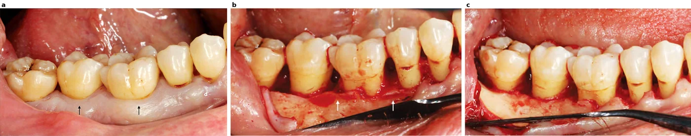

نسخه استخراجشده؛ ترجمه یا تأیید علمی انجام نشده است. وضعیت: captured
پریودنشیوم از سه منبع خون میگیرد:
عروق فوقپریوستئال — منبع اصلی لثه.
عروق لیگامان پریودنتال.
عروق سپتوم بیندندانی که از استخوان بیرون میآیند.
🔑 قاعده طلایی طراحی فلپ: فلپ باید پایهای پهنتر از رأس داشته باشد. خون از پایه وارد میشود؛ پایه باریک یعنی خونرسانی ناکافی و نکروز رأس فلپ.
برشهای آزادکننده عمودی را در لاینانگل دندان بگذار، نه در وسط پاپیلا و نه در وسط سطح باکال.
برش آزادکننده باید تا فراتر از اتصال موکوژنژیوال (MGJ) امتداد یابد تا فلپ آزادانه جابهجا شود.
در سطح پالاتال هرگز برش آزادکننده عمودی نزن — خطر آسیب به شریان پالاتین بزرگ.
فلپ باید بدون کشش در موقعیت نهایی قرار گیرد؛ کشش، خونرسانی را قطع میکند.

| ساختار | محل | خطر |
|---|---|---|
| شریان پالاتین بزرگ | پالاتال، فاصله آن از مارجین لثه با عمق قوس کام تغییر میکند — در کام کمعمق نزدیکتر | 🔴 خونریزی شدید؛ محدودکننده برداشت پیوند بافت همبند |
| سوراخ چانهای | معمولاً نزدیک آپکس پرهمولر دوم پایین | بیحسی دائمی لب و چانه |
| عصب و شریان زبانی | کف دهان، لینگوال مولرهای پایین | 🔴 خونریزی و هماتوم کف دهان — تهدیدکننده راه هوایی |
| سینوس فک بالا | بالای آپکس مولرها و پرهمولرهای بالا | ارتباط دهانی-سینوسی |
| ستیغ مایلوهایوئید | لینگوال مولرهای پایین | محدودیت جابهجایی فلپ |
| ستیغ مایل خارجی | باکال مولرهای پایین | محدودیت طراحی فلپ |
🔑 نکته حیاتی درباره کام: فاصله ایمن برداشت پیوند از کام به عمق قوس کام بستگی دارد. در کام کمعمق و مسطح، شریان به مارجین نزدیکتر است و فضای ایمن باریکتر — این بیماران بیشترین خطر را دارند.
⚠️ اگر شریان پالاتین بزرگ آسیب دید: فشار مستقیم و پیوسته، سپس بخیه فشاری در ناحیه، و در صورت لزوم فشار روی سوراخ پالاتین بزرگ در محل خروج شریان.
| ناحیه | روش |
|---|---|
| باکال فک بالا | انفیلتراسیون |
| پالاتال | بلوک پالاتین بزرگ و نازوپالاتین، یا انفیلتراسیون |
| باکال و لینگوال فک پایین خلفی | بلوک آلوئولار تحتانی + بلوک باکال بلند |
| قدامی فک پایین | بلوک منتال-اینسیزیو یا انفیلتراسیون |
🔑 غلظت ۱:۵۰٬۰۰۰ اپینفرین برای هموستاز موضعی مؤثرتر از ۱:۱۰۰٬۰۰۰ است — اما تفاوت آنها در عمق و مدت بیحسی ناچیز است.
پس: از غلظت بالاتر فقط برای کنترل خونریزی در ناحیه محدود استفاده کن، نه برای بیحسی بیشتر — و همیشه با توجه به حداکثر دوز مجاز و وضعیت قلبی-عروقی بیمار.
در بیمار با بیماری قلبی-عروقی ناپایدار، مقدار کل اپینفرین را محدود کن.
از تزریق داخلعروقی با آسپیراسیون پیش از تزریق پیشگیری کن.
فشار مستقیم با گاز مرطوب — نخستین و مؤثرترین اقدام؛ حداقل چند دقیقه پیوسته.
وازوکانستریکتور موضعی.
مواد هموستاتیک موضعی: سلولز اکسیده، اسفنج ژلاتینی، کلاژن.
بخیه فشاری در ناحیه.
در خونریزی شریانی مقاوم: شناسایی منبع و ارجاع فوری در صورت عدم کنترل.
⚠️ در بیمار تحت ضدانعقاد، قطع خودسرانه دارو ممنوع است؛ هماهنگی با پزشک معالج و در بیشتر موارد ادامه دارو با اقدامات هموستاز موضعی، رویکرد استاندارد است.
⚠️ اشتباه رایج ۱: فلپ باید پایه پهنتر از رأس داشته باشد.
⚠️ اشتباه رایج ۲: در پالاتال هرگز برش آزادکننده عمودی نزن.
⚠️ اشتباه رایج ۳: غلظت ۱:۵۰٬۰۰۰ برای هموستاز است، نه بیحسی عمیقتر.